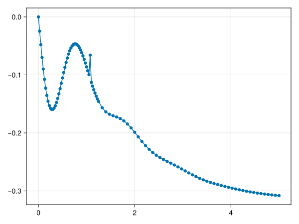

Quick start
To get started, load TimeEvolutionPEPO.jl and the TensorKit package.jl
julia> using TimeEvolutionPEPOjulia> using TensorKit
Computing Observables
To calculate expectation values of observables, one must first construct a reduced density matrix from the tensor network. To do this, a boundary algorithm (and associated boundary bond dimension) must be chosen to compute the partial trace of the environment around those lattice sites to be left untraced. Such an object is represented by the DensityMatrix struct. A DensityMatrix can the be used to compute reduced density matrices.
function magnetisation(pepo::PEPO; alg = CTMRG(bonddim = 16, tol = 1e-8, verbose=false))
dm = DensityMatrix(pepo, alg)
rdm = partialtrace(dm, (1,1))
M = expval(rdm, PAULI[1])
return real(M)
endmagnetisation (generic function with 1 method)In practice it is useful to save the DensityMatrix object rather than running the boundary renormalization every time one wishes to compute a local observable. The correlation length of a state can be directly accessed directly from the DensityMatrix object without first needing to compute a partial trace:
julia> pepo = PEPO((0,0,-1), ℂ^2, ℂ^4);julia> dm = DensityMatrix(pepo, VUMPS(bonddim = 16))[ Info: Algorithm Convergence Iteration [ Info: While... >1.0e-12 ≤100 [ Info: VUMPS 1.09701888040213 1 [ Info: VUMPS 1.879673743575254e-17 2 DensityMatrix of unit cell size (1, 1) normalized using: VUMPS(16, 100, 1.0e-12, true)julia> correlationlength(dm)5.642959881634932
It is also possible to compute arbitrary $n$-point observables be computing reduced density matrices over multiple sites:
function cx13(dm::DensityMatrix)
X = PAULI[1]
id = one(X)
rdm13 = partialtrace(dm, (1,1), (3,1)) # specified sites do not have to be adjacent
cx13 = expval(rdm13, X, X) - expval(rdm13, kron(X, id)) * expval(rdm13, kron(id, X))
return cx13
endcx13 (generic function with 1 method)Running Simulation
Simulations must first be initialised using three arguments. First, a tensor network representation of an initial state must be defined. This can be one obtained from a different Simulation object by calling the function quantumstate on this object to return the PEPO associated with that simulation.
function newsim(model)
# Set initial state to a product state of spins pointing down along the z-axis on a two-by-two
# unit-cell
ρ = fill((0,0,-1), 2, 2)
# Set the bond dimension equal to 4
D = 4
# Initialise using the TEBD (with default options)
method = TEBD()
# Construct the tensor network. We enforce a checkerboard lattice using
# the `SquareSymmetric` type parameter
state = PEPO{SquareSymmetric}(ρ, 4)
sim = Simulation(state, model, method; timestep=0.025)
return sim
endnewsim (generic function with 1 method)We can then run the simulation be calling simulate!.
function runsim!(sim)
magn = Float64[]
time = Float64[]
# This custom function is executed at regular intervals during the simulation
callback = sim -> begin
# Get some useful simulation information
info = simulationinfo(sim)
# Get tge `PEPO` object contained in `sim`
state = quantumstate(sim)
push!(magn, magnetisation(state))
push!(time, info.simtime)
end
# Initially, dynamics are faster, so execute callback every time step
simulate!(callback, sim; numsteps = 50, maxshots = 50, verbose=false)
# Sample only every 3rd time step for another 150 steps
simulate!(callback, sim; numsteps = 150, maxshots = 50, verbose=false)
return magn, time
endrunsim! (generic function with 1 method)As an example, consider the nearest-neighbour Ising model:
\[H = \frac{J}{4} \sum_{\langle i,j \rangle} \sigma^{z}_i \sigma^{z}_j\]
with transverse dissipation $L_j = \frac{\sqrt{\gamma}}{2}(\sigma^y_j - i\sigma^z_j)$. This model can be constructed by using the following code (where we have chosen $\gamma = 1$:
julia> X, Y, Z = PAULI(ComplexF64[0.0 + 0.0im 1.0 + 0.0im; 1.0 + 0.0im 0.0 + 0.0im], ComplexF64[0.0 + 0.0im 0.0 - 1.0im; 0.0 + 1.0im 0.0 + 0.0im], ComplexF64[1.0 + 0.0im 0.0 + 0.0im; 0.0 + 0.0im -1.0 + 0.0im])julia> model = J -> Model(J / 4 * LocalOp(Z,Z) + Dissipator(0.5 * (Y - im * Z)))#6 (generic function with 1 method)
This can then be passed into the functions we have defined previously.
julia> sim = newsim(model(3.0));[ Info: First-order trotter decomposition... [ Info: Compressed to η=11 with error 1.2850557985325083e-18 [ Info: Compressed to η=11 with error 1.2850557985325083e-18 [ Info: Compressed to η=11 with error 1.2850557985325083e-18 [ Info: Compressed to η=11 with error 1.2850557985325083e-18 [ Info: Compressed to η=11 with error 1.2850557985325083e-18 [ Info: Compressed to η=11 with error 1.2850557985325083e-18 [ Info: Compressed to η=11 with error 1.2850557985325083e-18 [ Info: Compressed to η=11 with error 1.2850557985325083e-18 [ Info: ...of 2 operatorsjulia> magn, time = runsim!(sim);[ Info: Finished. [ Info: Steady state convergence: 0.012561879137176437 after 50 iterations. [ Info: Total iterations for this Simulation: 50). [ Info: Finished. [ Info: Steady state convergence: 0.002575114854006587 after 150 iterations. [ Info: Total iterations for this Simulation: 200).
Note the Simulation object sim mutates in the process. Some information pertaining to a given Simulation object can be obtained by calling:
julia> simulationinfo(sim)(converged = false, convergence = 0.002575114854006587, iterations = 200, finished = true, simtime = 5.0, walltime = 22.321773052215576)
which can also be accessed in the callback function. Lets plot the results of the simulation using the Plots.jl package.
julia> using Makie, CairoMakie # Make sure this is `add`ed to you environment!julia> scatterlines(time, magn)FigureAxisPlot()
